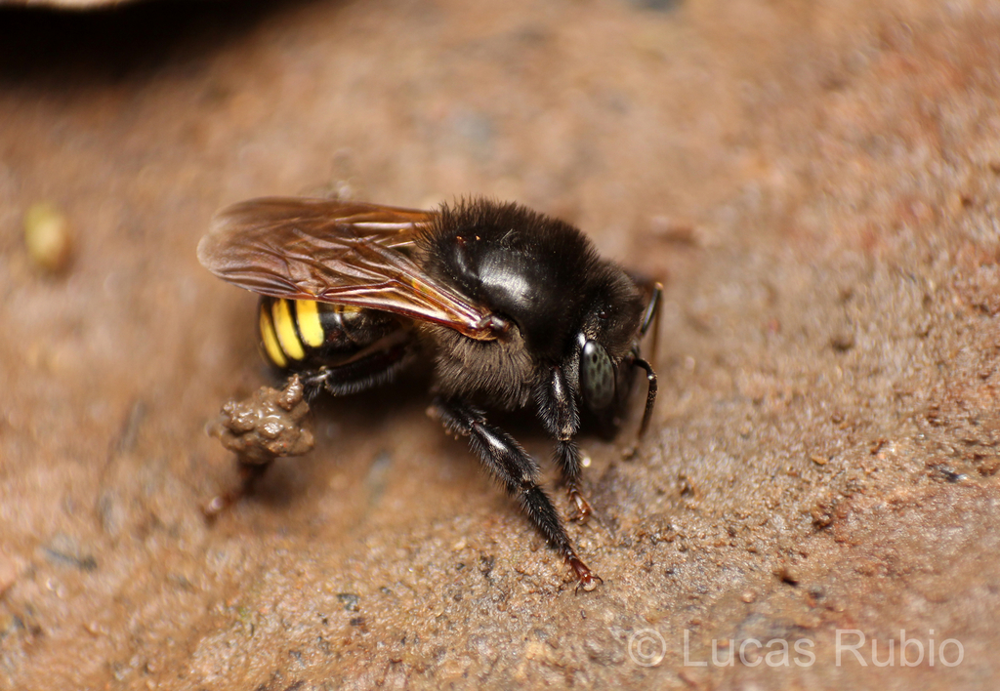

Especie em destaque
Mandacaia
Melipona quadrifasciata
Melipona quadrifasciata e uma das abelhas sem ferrao mais conhecidas do Brasil, famosa pelas faixas claras no abdomen e pelo mel muito apreciado.

Visao geral
Uma das estrelas da meliponicultura
A mandacaia forma colonias sociais e costuma ser lembrada em projetos de criacao racional, educacao ambiental e conservacao de abelhas nativas.
Curiosidade
As faixas do abdomen viram assinatura visual
O padrao listrado e um dos detalhes que ajudam na identificacao da especie, tornando a mandacaia bastante reconhecida entre visitantes e criadores.
Imagem e cuidado
Caixas bem manejadas e flora diversa ajudam
A especie responde melhor quando encontra abrigo protegido, menos variacao brusca no ambiente e floradas variadas durante o ano.